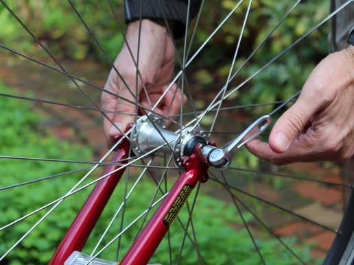

Fish-based Composition
>=>
>=> :(A => M[B]) => (B => M[C]) => (A => M[C])
"andThen"
<=<
<=< :
(B => M[C]) => (A => M[B]) => (A => M[C])
compose
=>=
=>= :
(M[A] => B) => (M[B] => C) => (M[A] => C)
=<=
=<= :
(M[B] => C) => (M[A] => B) => (M[A] => C)
Recap on composition
squggle ∘ bizzle === x => squggle( bizzle(x) )
∘ : (B => C) => (A => B) => (A => C)
Why composition?
val x = "someval"
for {
a <- someeffect(x)
b <- anothereffect(a)
c <- yetanothereffect(b)
} yield c
val effects = yetanothereffect ∘ anothereffect ∘ someeffect
val effects = yetanothereffect ∘ anothereffect ∘ someeffect
...but we can't quite do this because the types don't line up!
Coupling != Composition

Think quick-release gears
val x = "someval"
for {
a <- someeffect(x)
b <- anothereffect(a)
c <- yetanothereffect(b)
} yield c
someeffect(x).flatMap( anothereffect ).flatMap( yetanothereffect )
NB: flatMap takes an M[A] and a function A => M[B], and returns an M[B]
someeffect(x) >>= ( anothereffect ) >>= ( yetanothereffect )
val e = x => someeffect(x) >>= ( anothereffect ) >>= ( yetanothereffect )
e === Kleisli(someeffect) >==> anothereffect >==> yetanothereffect
NB: >==> != >=>, but lifts the RHS into kleisli
Kleisli(foo) >=> Kleisli(bar) === x => foo(x) >>= bar
def >=>[C](k: Kleisli[M, B, C])(implicit b: Bind[M]): Kleisli[M, A, C] =
kleisli((a: A) => b.bind(this(a))(k(_)))
foo <=< bar === x => bar(x) >>= foo
What about composing, M[A] => B ?
coflatMap/cobind/extend
takes an M[A]
a function M[A] => B
and returns an M[B]
Stream(1,2,3).cobind( { case h #:: tl => h +1 } ) === Stream(2,3,4)
Stream(1,2,3).cojoin.map( { case h #:: tl => h +1 } ) === Stream(2,3,4)
Stream(1,2,3).cojoin === Stream(Stream(1,2,3),Stream(2,3),Stream(3))
Stream(1,2,3).cojoin === Stream(1,2,3).tails.init
Stream(1,2,3).cojoin === Stream(1,2,3).tails.toStream.init
x.cobind(r).cobind(s) === x.cobind(Cokleisli(r) =>= Cokleisli(s))
x.cobind(r).cobind(s) === x.cobind(Cokleisli(r) =>= Cokleisli(s))
...actually you'll need to call .run on the Cokleisli to get the composed function
k1 =>= k2 === fx => fx.cobind(k1).cobind(k2)
k1 =<= k2 === fx => fx.cobind(k2).cobind(k1)
>=> && >==> =>=
<=< && <==< =<=